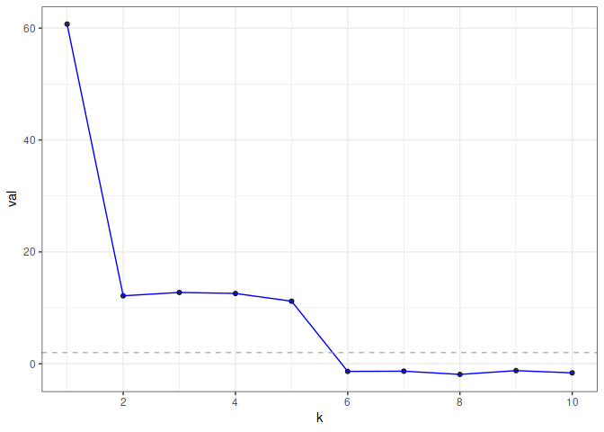

gdim estimates graph dimension using cross-validated eigenvalues, via the graph-splitting technique developed in http://arxiv.org/abs/2108.03336. Theoretically, the method works by computing a special type of cross-validated eigenvalue which follows a simple central limit theorem. This allows users to perform hypothesis tests on the rank of the graph.
Installation
You can install gdim from GitHub with:
# install.packages("devtools")
devtools::install_github("RoheLab/gdim")Example
eigcv() is the main function in gdim. The single required parameter for the function is the maximum possible dimension, k_max.
In the following example, we generate a random graph from the stochastic block model (SBM) with 1000 nodes and 5 blocks (as such, we would expect the estimated graph dimension to be 5).
library(fastRG)
#> Loading required package: Matrix
B <- matrix(0.1, 5, 5)
diag(B) <- 0.3
model <- sbm(
n = 1000,
k = 5,
B = B,
expected_degree = 40,
poisson_edges = FALSE,
allow_self_loops = FALSE
)
A <- sample_sparse(model)Here, A is the adjacency matrix.
Now, we call the eigcv() function with k_max=10 to estimate graph dimension.
library(gdim)
eigcv_result <- eigcv(A, k_max = 10)
eigcv_result
#> Estimated graph dimension: 5
#>
#> Number of bootstraps: 10
#> Edge splitting probabaility: 0.1
#> Significance level: 0.05
#>
#> ------------ Summary of Tests ------------
#> k z pvals padj
#> 1 60.8793909 1.000000e-32 1.000000e-32
#> 2 12.9226104 1.000000e-32 1.000000e-32
#> 3 11.6415706 1.266538e-31 1.266538e-31
#> 4 11.5093016 5.921680e-31 5.921680e-31
#> 5 11.8647120 1.000000e-32 1.000000e-32
#> 6 -1.5356317 9.376856e-01 9.376856e-01
#> 7 -1.4952968 9.325815e-01 9.325815e-01
#> 8 -0.9315610 8.242183e-01 8.242183e-01
#> 9 -0.9875156 8.383050e-01 8.383050e-01
#> 10 -1.5758100 9.424652e-01 9.424652e-01In this example, eigcv() suggests k=5.
To visualize the result, use plot() which returns a ggplot object. The function displays the test statistic (z score) for each hypothesized graph dimension.
plot(eigcv_result)
Reference
Chen, Fan, Sebastien Roch, Karl Rohe, and Shuqi Yu. “Estimating Graph Dimension with Cross-Validated Eigenvalues.” ArXiv:2108.03336 [Cs, Math, Stat], August 6, 2021. http://arxiv.org/abs/2108.03336.